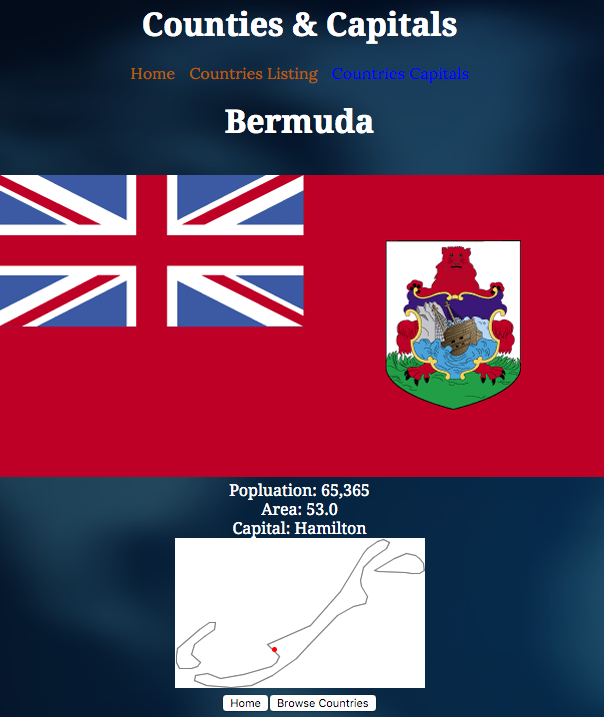
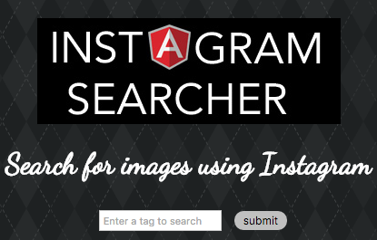

Jaybird Photo Gallery
My final project for my Front End Development class was to take an existing API and do something creative with it. In this project I took the Flickr API and set it so you can log in and look at your own images with a gallery I built. You can also look at some preset galleries if you don't want to log in.
Languages used: JS, HTML, CSS

Countries and Capitals
In this project, I had to take an existing database and display the information on a website. This was one of my first larger projects to use Angluar JS.
Languages used: JS, HTML, CSS

Instagram Search
I made a simple search application that uses the Instagram API.
Languages used: JS, HTML, CSS
Holiday Calendar
I can't seem to remember the holidays sometimes, so this application was built for that. I was given some Javascript that would create the correct month for the month and year and I hooked that up to a API that pulled the holidays.
Languages used: JS, HTML, CSS
Number Facts
Enter a four digit number below to find out an intresting fact about that number.